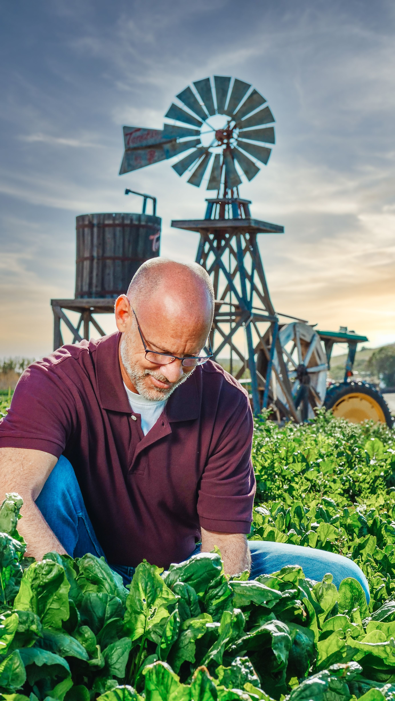
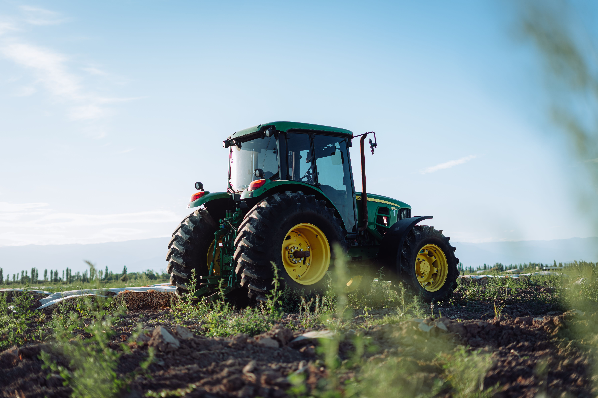
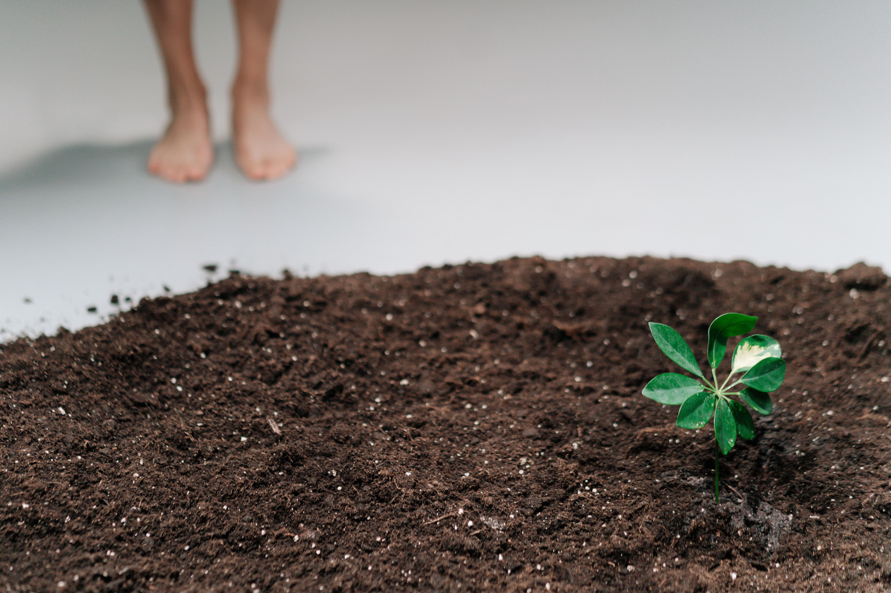
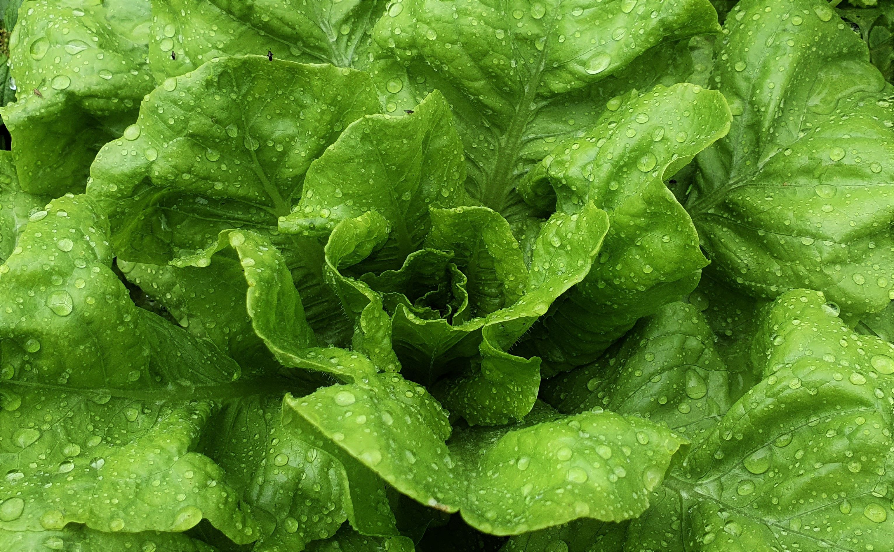
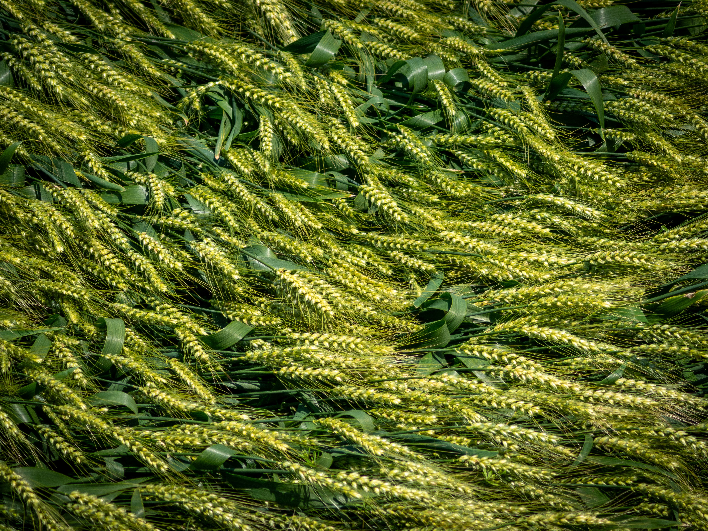
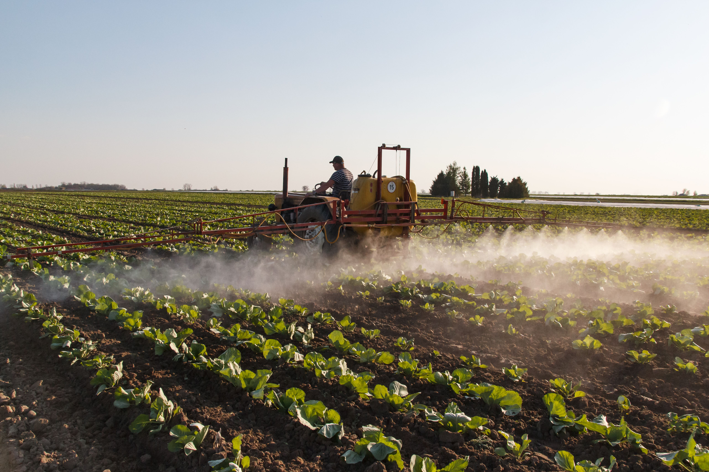
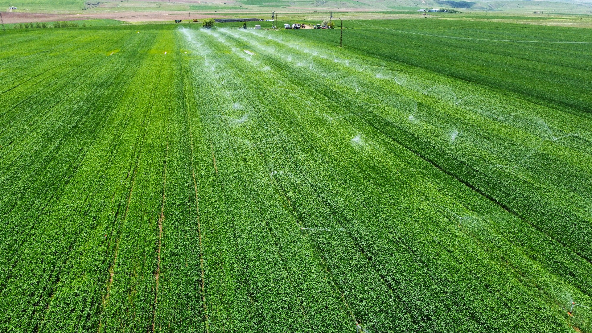
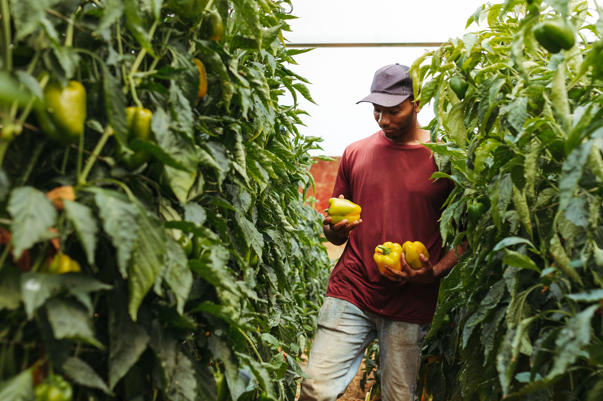
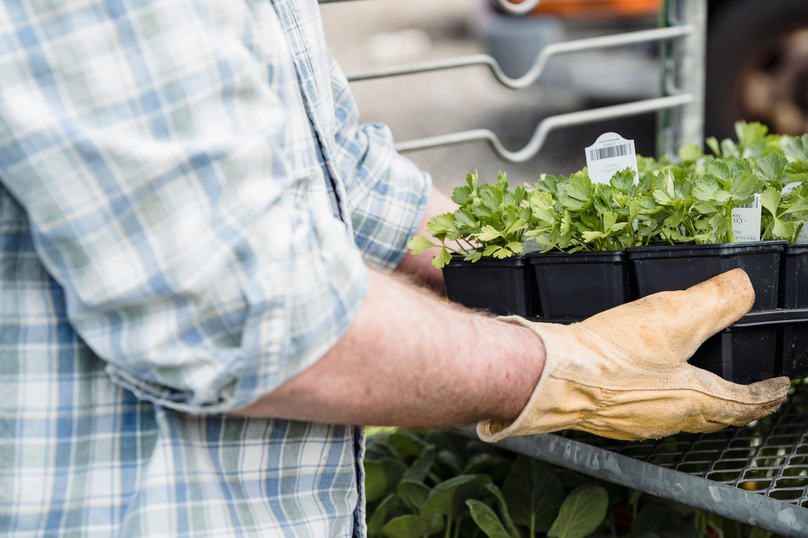
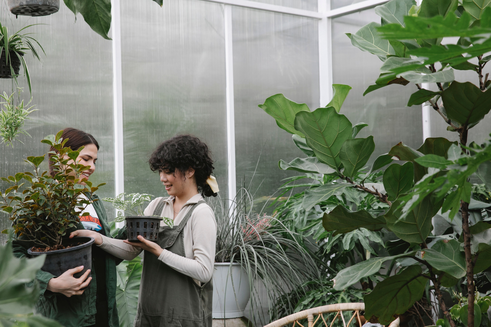

Hands-on care for every crop, from the first seedling to the final harvest.
Empowering farmers with innovative, eco-friendly practices to meet rising global food demands, conserve natural resources, strengthen communities, and protect our planet’s sustainable future.
Get Started Now
Hands-on care for every crop, from the first seedling to the final harvest.
Our commitment to quality, innovation, and reliability has consistently earned the trust and confidence of farmers.

Ready to harness the power of the sun?
Get Started NowEmpowering agriculture with clean, renewable energy solutions that reduce costs, improve efficiency, and drive sustainable growth while supporting farmers and future generations.



Unlock your farm’s full potential with our advanced soil testing and optimization services. By assessing soil health, nutrients, and structure, we deliver tailored recommendations that boost productivity while supporting long-term sustainability.
Step into the future of agriculture with our precision farming services. Leveraging GPS, data insights, and smart irrigation, we help optimize resources, cut waste, and deliver higher yields while protecting the environment.






Our experienced agronomists deliver personalized consulting tailored to your unique farming challenges. From crop selection to pest control, we provide practical insights that boost productivity and support long-term farm sustainability.
We partner with you every step, delivering tailored solutions that drive growth, efficiency, and lasting agricultural success.
We carefully analyze agricultural energy needs and design tailored solutions to maximize efficiency and sustainability.
More InfoOur skilled team ensures smooth, efficient, and timely project execution with dependable results.
More InfoWe provide ongoing support to maximize system performance, ensuring efficiency, reliability, and sustainable long-term results.
More Info